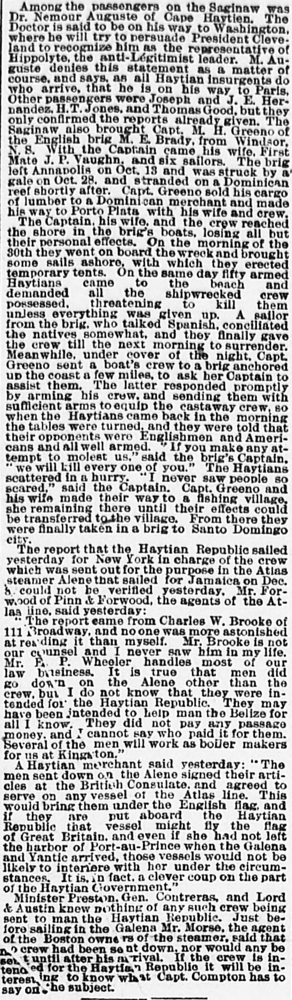

Tho report that tho Haytian Republia sailed yesterday for Now IforkEl informe de que la República haitiana zarpó ayer hacia Nueva York
The Sun. New York [N.Y.], December 19, 1888. Page 1. Published by Benj. H. Day. A daily newspaper, 1833–1916.The Sun. New York [N.Y.], 19 de diciembre de 1888. Página 1. Publicado por Benj. H. Day. Periódico diario, 1833–1916. View the originalVer el original

The Sun reported that a rumor regarding the departure of the Haytian Republic for New York could not be verified by Mr. Forwood of the Atlas line agents, though he acknowledged that men had traveled on the Atlas steamer Alene. A Haytian merchant stated that these men signed articles at the British Consulate to serve on any Atlas line vessel, potentially bringing them under the English flag.The Sun comunicó que los rumores relativos a la salida del Haytian Republic rumbo a Nueva York no pudieron ser ratificados por el Sr. Forwood, representante de la línea Atlas, si bien admitió que varios sujetos se habían embarcado en el vapor de su flota Alene. Un comerciante haitiano manifestó que estos hombres habían suscrito contrata en el consulado británico para prestar servicios en cualquier embarcación de la compañía Atlas, quedando así presumiblemente amparados bajo el pabellón británico.
FULL TEXT:TEXTO COMPLETO:
The Sun December 19, 188819 de diciembre de 1888
Among the passengers on the Saginaw was Dr. Nemour Auguste of Cape Haytien. The Doctor is said to be on his way to Washington, where he will try to persuade President Cleveland to recognize him as the representative of Hippolyte, the anti-Légitimist leader. M. Auguste denies this statement as a matter of course, and says, as all Haytian insurgents do who arrive, that he is on his way to Paris. Other passengers were Joseph and J. E. Hernandez, H. T. Jones, and Thomas Good, but they only confirmed the reports already given. The Saginaw also brought Capt. M. H. Greeno of the English brig M. E. Brady, from Windsor, N. S. With the Captain came his wife, First Mate J. P. Vaughn, and six sailors. The brig left Annapolis on Oct. 13 and was struck by a gale on Oct. 28, and stranded on a Dominican reef shortly after. Capt. Greeno sold his cargo of lumber to a Dominican merchant and made his way to Porto Plata with his wife and crew.Entre los pasajeros del Saginaw estaba el Dr. Nemour Auguste de Cabo Haitiano. Se dice que el Doctor está en camino a Washington, donde tratará de persuadir al presidente Cleveland de reconocerlo como el representante de Hippolyte, el líder anti-legitimista. M. Auguste niega esta declaración por supuesto, y dice, como hacen todos los insurgentes haitianos que llegan, que está en camino a París. Otros pasajeros fueron Joseph y J. E. Hernandez, H. T. Jones, y Thomas Good, pero solo confirmaron los informes ya dados. El Saginaw también trajo al capitán M. H. Greeno del bergantín inglés M. E. Brady, de Windsor, Nueva Escocia. Con el Capitán vino su esposa, el Primer Oficial J. P. Vaughn, y seis marineros. El bergantín salió de Annapolis el 13 de octubre y fue golpeado por un vendaval el 28 de octubre, y encalló en un arrecife dominicano poco después. El capitán Greeno vendió su carga de madera a un comerciante dominicano y se dirigió a Puerto Plata con su esposa y tripulación.
The Captain, his wife, and the crew reached the shore in the brig's boats, losing all but their personal effects. On the morning of the 30th they went on board the wreck and brought some sails ashore, with which they erected temporary tents. On the same day fifty armed Haytians came to the beach and demanded all the shipwrecked crew possessed, threatening to kill them unless everything was given up. A sailor from the brig, who talked Spanish, conciliated the natives somewhat, and they finally gave the crew till the next morning to surrender. Meanwhile, under cover of the night, Capt. Greeno sent a boat's crew to a brig anchored up the coast a few miles, to ask her Captain to assist them. The latter responded promptly by arming his crew, and sending them with sufficient arms to equip the castaway crew, so when the Haytians came back in the morning the tables were turned, and they were told that their opponents were Englishmen and Americans and all well armed. "If you make any attempt to molest us," said the brig's Captain, "we will kill every one of you." The Haytians scattered in a hurry. "I never saw people so scared," said the Captain. Capt. Greeno and his wife made their way to a fishing village, she remaining there until their effects could be transferred to the village. From there they were finally taken in a brig to Santo Domingo city.El Capitán, su esposa, y la tripulación llegaron a la costa en los botes del bergantín, perdiendo todo menos sus efectos personales. En la mañana del 30 fueron a bordo del naufragio y trajeron algunas velas a tierra, con las que erigieron tiendas temporales. El mismo día cincuenta haitianos armados vinieron a la playa y demandaron todo lo que la tripulación naufragada poseía, amenazando con matarlos a menos que todo fuera entregado. Un marinero del bergantín, que hablaba español, concilió algo a los nativos, y finalmente dieron a la tripulación hasta la mañana siguiente para rendirse. Entretanto, bajo el amparo de la noche, el capitán Greeno envió una tripulación de bote a un bergantín anclado costa arriba a unas pocas millas, para pedir a su Capitán que los asistiera. Este último respondió prontamente armando a su tripulación, y enviándolos con suficientes armas para equipar a la tripulación náufraga, así que cuando los haitianos regresaron en la mañana las tornas se volvieron, y se les dijo que sus oponentes eran ingleses y estadounidenses y todos bien armados. «Si hacen cualquier intento de molestarnos», dijo el Capitán del bergantín, «mataremos a cada uno de ustedes». Los haitianos se dispersaron a toda prisa. «Nunca vi gente tan asustada», dijo el Capitán. El capitán Greeno y su esposa se dirigieron a una aldea pesquera, ella permaneciendo allí hasta que sus efectos pudieron ser transferidos a la aldea. Desde allí fueron finalmente llevados en un bergantín a la ciudad de Santo Domingo.
The report that the Haytian Republic sailed yesterday for New York in charge of the crew which was sent out for the purpose in the Atlas steamer Alene that sailed for Jamaica on Dec. 8, could not be verified yesterday. Mr. Forwood of Pim & Forwood, the agents of the Atlas line, said yesterday:El informe de que la Haytian Republic zarpó ayer para Nueva York a cargo de la tripulación que fue enviada para ese propósito en el vapor Alene de la Atlas que zarpó para Jamaica el 8 de diciembre, no pudo ser verificado ayer. El Sr. Forwood de Pim & Forwood, los agentes de la línea Atlas, dijo ayer:
"The report came from Charles W. Brooke of 111 Broadway, and no one was more astonished at reading it than myself. Mr. Brooke is not our counsel and I never saw him in my life. Mr. E. P. Wheeler handles most of our law business. It is true that men did go down on the Alene other than the crew, but I do not know that they were intended for the Haytian Republic. They may have been intended to help man the Belize for all I know. They did not pay any passage money, and I cannot say who paid it for them. Several of the men will work as boiler makers for us at Kingston."«El informe vino de Charles W. Brooke de 111 Broadway, y nadie se asombró más al leerlo que yo mismo. El Sr. Brooke no es nuestro abogado y nunca lo vi en mi vida. El Sr. E. P. Wheeler maneja la mayor parte de nuestro negocio legal. Es cierto que hombres sí bajaron en el Alene además de la tripulación, pero no sé que estuvieran destinados a la Haytian Republic. Pueden haber estado destinados a ayudar a tripular el Belize por lo que sé. No pagaron dinero de pasaje alguno, y no puedo decir quién lo pagó por ellos. Varios de los hombres trabajarán como caldereros para nosotros en Kingston.»
A Haytian merchant said yesterday: "The men sent down on the Alene signed their articles at the British Consulate, and agreed to serve on any vessel of the Atlas line. This would bring them under the English flag, and if they are put aboard the Haytian Republic that vessel might fly the flag of Great Britain, and even if she had not left the harbor of Port-au-Prince when the Galena and Yantic arrived, those vessels would not be likely to interfere with her under the circumstances. It is, in fact, a clever coup on the part of the Haytian Government."Un comerciante haitiano dijo ayer: «Los hombres enviados en el Alene firmaron sus artículos en el Consulado británico, y acordaron servir en cualquier buque de la línea Atlas. Esto los pondría bajo la bandera inglesa, y si son puestos a bordo de la Haytian Republic ese buque podría enarbolar la bandera de Gran Bretaña, y aun si no hubiera salido del puerto de Puerto Príncipe cuando el Galena y el Yantic llegaron, esos buques no es probable que interfirieran con ella bajo las circunstancias. Es, en efecto, un golpe hábil por parte del Gobierno haitiano.»
Minister Preston, Gen. Contreras, and Lord & Austin knew nothing of any such crew being sent to man the Haytian Republic. Just before sailing in the Galena Mr. Morse, the agent of the Boston owners of the steamer, said that no crew had been sent down, nor would any be sent until after his arrival. If the crew is intended for the Haytian Republic it will be interesting to know what Capt. Compton has to say on the subject.El Ministro Preston, el general Contreras, y Lord & Austin no sabían nada de ninguna tripulación tal siendo enviada para tripular la Haytian Republic. Justo antes de zarpar en el Galena el Sr. Morse, el agente de los propietarios de Boston del vapor, dijo que no se había enviado tripulación alguna, ni se enviaría ninguna hasta después de su llegada. Si la tripulación está destinada a la Haytian Republic será interesante saber lo que el capitán Compton tiene que decir sobre el asunto.
[Editor's note: the paper writes of the east as part of Hayti. From 1822 to 1844 the Dominican Republic was held by Haitian military occupation, against its people's will; it restored its independence on February 27, 1844.][Nota del editor: el periódico habla del este como parte de Haití. De 1822 a 1844 la República Dominicana estuvo bajo ocupación militar haitiana, contra la voluntad de su pueblo; restauró su independencia el 27 de febrero de 1844.]